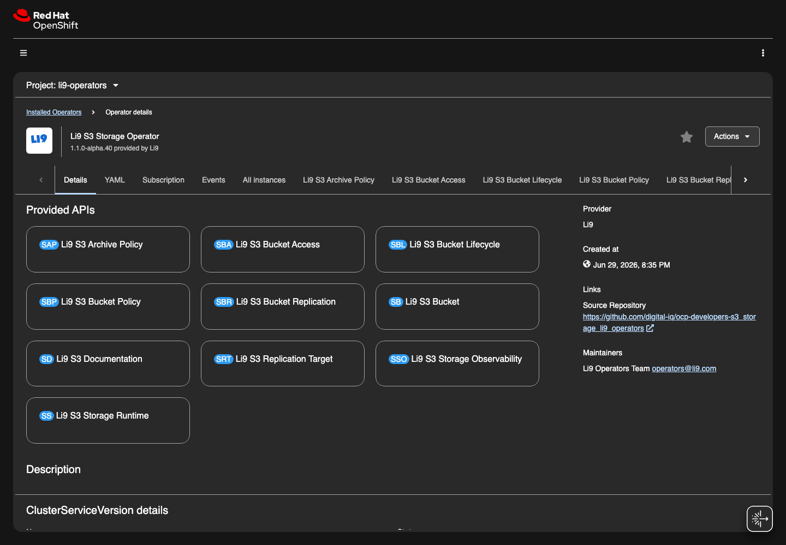

OpenShift Operator
OpenShift Operator: Uninstall.
Remove the installation in dependency order and verify that managed resources are gone.
Uninstall Checklist
Uninstall in dependency order: application credentials, bucket-facing CRs, documentation, storage runtime, then OLM resources. Decide data retention before deleting S3Storage; this decision controls whether runtime PVC data is preserved or removed by the operator.
If
spec.deletionPolicy is Delete, deleting S3Storage is destructive. Export or verify data before continuing.
| Step | Purpose | Expected Result |
|---|---|---|
| Inventory CRs | Find every bucket, access credential, policy, lifecycle, archive, replication, observability, and docs object owned by this installation. | No unexpected namespace or cluster-scope dependents remain. |
| Remove consumers | Delete application-facing access and bucket CRs before the runtime. | Generated Secrets are removed or retained according to owner policy. |
| Delete runtime | Delete S3Storage after setting the intended deletion policy. | Managed Deployments, StatefulSets, Services, Routes, and optional monitoring resources disappear. |
| Remove OLM | Delete Subscription/CSV only after all Li9 S3 CRs are gone. | The operator no longer reconciles resources. |
export LI9_NS=li9-s3-runtime
oc get s3storage,s3bucket,s3bucketaccess,s3bucketpolicy,s3bucketlifecycle,s3archivepolicy,s3replicationtarget,s3bucketreplication,s3storageobservability,s3documentation -n "${LI9_NS}"
# Remove dependent resources first.
oc delete s3bucketaccess -n "${LI9_NS}" --all
oc delete s3bucketpolicy -n "${LI9_NS}" --all
oc delete s3bucketlifecycle -n "${LI9_NS}" --all
oc delete s3archivepolicy -n "${LI9_NS}" --all
oc delete s3bucketreplication -n "${LI9_NS}" --all
oc delete s3replicationtarget -n "${LI9_NS}" --all
oc delete s3bucket -n "${LI9_NS}" --all
oc delete s3storageobservability -n "${LI9_NS}" --all
oc delete s3documentation -n "${LI9_NS}" --all
# Choose Retain unless the data owner approved destructive PVC cleanup.
oc patch s3storage -n "${LI9_NS}" li9-s3 --type merge -p '{"spec":{"deletionPolicy":"Retain"}}'
oc delete s3storage -n "${LI9_NS}" li9-s3
oc wait --for=delete s3storage/li9-s3 -n "${LI9_NS}" --timeout=10m || true
oc get pods,pvc,svc,route,servicemonitor,prometheusrule -n "${LI9_NS}" -l app.kubernetes.io/part-of=li9-s3
# Remove OLM resources only after runtime CRs are deleted.
oc delete subscription -n li9-operators li9-s3-operator
oc delete operatorgroup -n li9-operators li9-operators
oc delete catalogsource -n openshift-marketplace li9-operators
oc get csv -n li9-operators
oc delete csv -n li9-operators CSV_NAME
oc get crd | grep storage.li9.com || true
Verification
A clean uninstall has no Li9 S3 pods, no owned routes/services, no active reconciles, and no unexpected finalizers on deleted CRs. If PVCs remain after a Retain uninstall, that is expected and is handled through the organization's data-retention process.
oc get all,pvc,secret,configmap -n "${LI9_NS}" -l app.kubernetes.io/part-of=li9-s3
oc get events -n "${LI9_NS}" --field-selector type=Warning | grep li9-s3 || true
oc get s3storage,s3bucket,s3bucketaccess,s3bucketpolicy,s3bucketlifecycle,s3archivepolicy,s3replicationtarget,s3bucketreplication,s3storageobservability,s3documentation -A || true